Paper Summary: Textbooks are All You Need I & II
Background
In this notebook I’ll provide a summary of Microsoft Research’s Textbook Are All You Need paper. Here’s the abstract:
We introduce phi-1, a new large language model for code, with significantly smaller size than competing models: phi-1 is a Transformer-based model with 1.3B parameters, trained for 4 days on 8 A100s, using a selection of “textbook quality” data from the web (6B tokens) and synthetically generated textbooks and exercises with GPT-3.5 (1B tokens). Despite this small scale, phi-1 attains pass@1 accuracy 50.6% on HumanEval and 55.5% on MBPP. It also displays surprising emergent properties compared to phi-1-base, our model before our finetuning stage on a dataset of coding exercises, and phi-1-small, a smaller model with 350M parameters trained with the same pipeline as phi-1 that still achieves 45% on HumanEval.
I’ll also review the information published in Textbooks Are All You Need II a technical report in which they introduce phi-1.5 models trained on additional data.
Main Takeaways
- Model improvement is obtained with data quality (instead of model size, dataset size and amount of compute).
- High quality data means data that is diverse (wide range of concepts, skills, and scenarios; varying difficulty, complexity and style) and non-repetitive.
- Finetuning on 180M tokens led to the largest accuracy increase including for tasks that are not featured in the finetuning dataset.
- 1.3B parameter models outperform larger models trained on larger datasets.
- 350M parameter model performs decently well.
- Training on textbook-like data might mean model stores/accesses knowledge more efficiently than if trained on web data.
Data
phi-1
phi-1 uses two different datasets, one for pretraining and one for finetuning:
- CodeTextbook (pretraining)
- The Stack+ (6B tokens): subset of The Stack and StackOverflow, filtered using a LM-based classifier
- GPT-3.5 generated Python textbooks (<1B tokens)
- CodeExercises (finetuning)
- GPT-3.5 generated Python exercises and solutions (~180M tokens; function completion tasks based on natural language instructions)
phi-1.5
- CodeTextbook (7B tokens)
- 20B tokens of synthetically generated textbook-like data
A couple of quotes from the paper about data:
…our dataset consists almost exclusively of synthetically generated data
…a robust and comprehensive dataset demands more than raw computational power: it requires intricate iterations, strategic topic selection, and a deep understanding of knowledge gaps to ensure quality and diversity of the data.
phi-1.5-web, phi-1.5-web-only
- 95B tokens of filtered web data
- 88B from the Falcon refined web dataset.
- 7B from The Stack and Stack Overflow.
- phi-1.5-web-only trained only on filtered web data
- 80% NLP data sources.
- 20% code datasets.
- phi-1.5-web trained on a mix of filtered data
- 40%: a subset of filtered web data.
- 20%: phi-1’s code data.
- 40%: new synthetic NLP data.
We speculate that the creation of synthetic datasets will become, in the near future, an important technical skill and a central topic of research in AI.
Architecture
| Decoder-only Transformer (FlashAttention/MLP in parallel) | phi-1/phi-1.5 | phi-1-small |
|---|---|---|
| Parameters | 1.3B | 350M |
| Layers | 24 | 20 |
| Hidden dimension | 2048 | 1024 |
| MLP inner dimension | 8192 | 4096 |
| Attention head count | 32 | 16 |
| Attention head dimension | 64 | 64 |
Training
phi-1
| Pre-training (phi-1-base) | Fine-tuning (phi-1) | |
|---|---|---|
| Time | <4 days | 7 hours |
| Batch size | 1024 | 256 |
| Max learning rate | 1e-3 | 1e-4 |
| Warmup | 750 steps | 50 steps |
| Weight Decay | 0.1 | 0.01 |
| Checkpoint | 24k steps/8 epochs/50B tokens | Undisclosed |
| Total steps | 36000 | 6000 |
Both phi-1.5 and phi-1.5-web are base models pre-trained on large natural language corpora. In particular we did not perform further instruction-based finetuning to align them with human instructions (emphasis mine).
I was really hoping for more details about their 350M model experiments (I love it when small models perform decently) but they only provided the following:
…phi-1-small, a smaller model with 350M parameters trained with the same pipeline as phi-1
phi-1.5
- Pretraining
- Batch size: 2048
- Constant learning rate: 2e-4
- Weight decay: 0.1
- Training tokens: 50B (80% new synthetic data, 20% phi-1 data)
Limitations
phi-1
- This model is python-specific so it won’t be as performant for other programming languages.
- Lacks domain-specific knowledge (APIs, less common packages).
- Less robust to grammar/style variations (small changes in natural language instructions can affect performance).
- Unclear what type of scale in model or dataset size will overcome these limitations.
- GPT-4 should be used to generate synthetic data.
phi-1.5
- Not immune to generating toxic content.
- Makes some intricate mistakes when explaining code.
Benchmarks
phi-1
- HumanEval
- A dataset of 164 hand-written coding problems.
- Each problem includes a function signature, docstring, body and several unit tests (7.7 avg tests per problem)
- MBPP
- 1000 crowd-sources Python programming problems.
- Designed for entry-level programmers.
- Each problem has a task description, code solution and 3 automated test cases.
- \(pass@k\) metric
- \(k\) generated code samples per problem.
- problem is “solved” if any sample passes the unit tests.

In the figure above (Figure 2.1 in the paper) note the strong performance of the 350M parameter model trained on 26B tokens for 135 GPU hours. I would love to know more about that checkpoint.
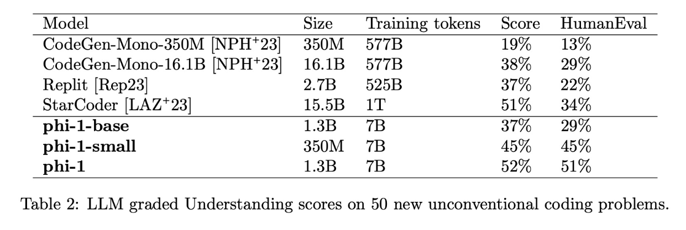
In the table above (Table 2 from the paper) the “Score” column is graded by GPT-4 on a scale of 0 to 10 while the HumanEval column is calculated with pass@1 accuracy.
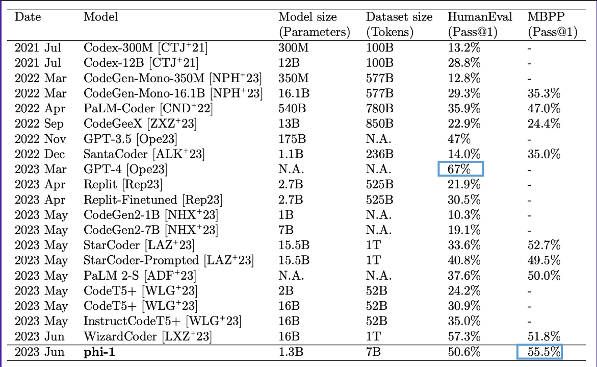
I found Table 1 in the paper to be the most impressive framing of phi-1’s performance. It beats models that are hundreds of times larger (such as PaLM-Coder) trained on datasets thousands of times as large (such as StarCoder). As a reminder, MBPP consists of 1000 crowdsourced entry-level programming questions.
Data Decontamination
A standard contamination study will look for n-gram overlaps between the training and test sets to understand how “contaminated” the training set is with information from the test set. They only found four such cases in the paper, including one where the n-gram was the same but for a different context.
The authors used a “strong form” of data decontamination: embedding and syntax-based similarity Embedding similarity determines semantic similarity, while AST-based similarity determines how similar the underlying operations of the code are between two dataset items. After removing contaminated dataset items, the authors trained phi-1 on this “pruned dataset” and it performed better than StarCoder-Prompted (15.5B) for all AST-based match rate thresholds and similarity categories (similar, non-similar, total) except for one (see table 3 below).
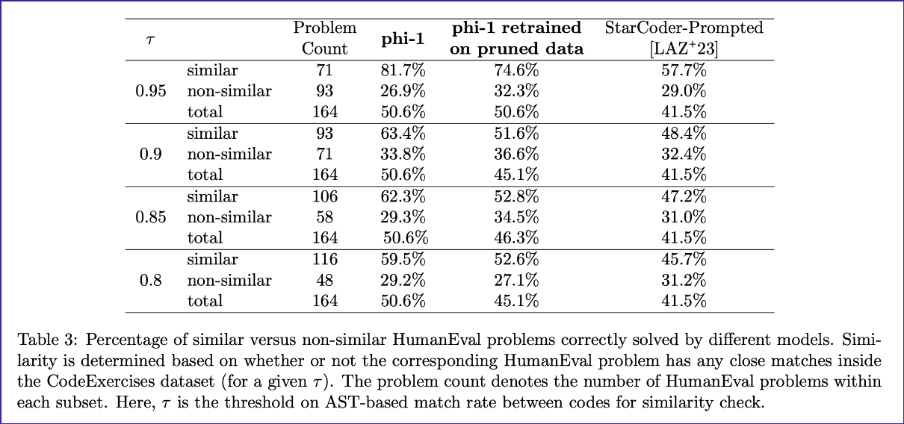
phi-1.5
- The authors used LM-Eval Harness on 5 common sense benchmarks
- 5 standard language understanding tasks
- Zero-shot accuracy LM-Eval Harness on PIQA, HellaSwag, and OpenbookQA.
- 2-shot accuracy on MMLU.
- Exact match score on SQUAD.
- 3 reasoning ability benchmarks
- Zero-shot pass@1 accuracy on GSM8K for math and HumanEval/MBPP for entry-level Python coding.
- 1 benchmark for toxicity (ToxiGen)
- 86 prompts, 34 evaluated as “fail” (bad), 47 as “pass” (good) and 4 as “did not understand”.
Here are the results for phi-1.5 on these benchmarks, compared to other (larger) models:
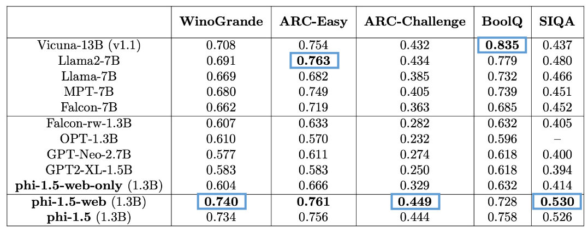
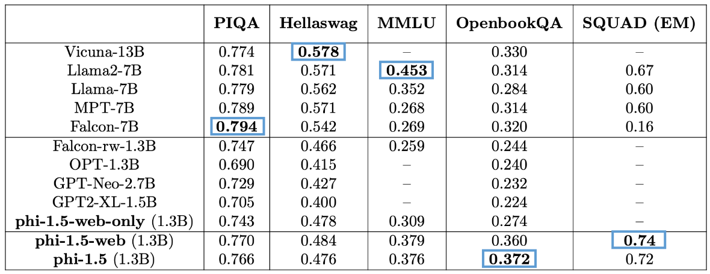
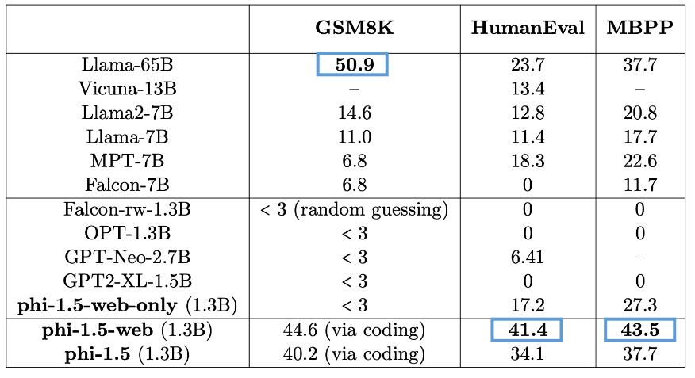
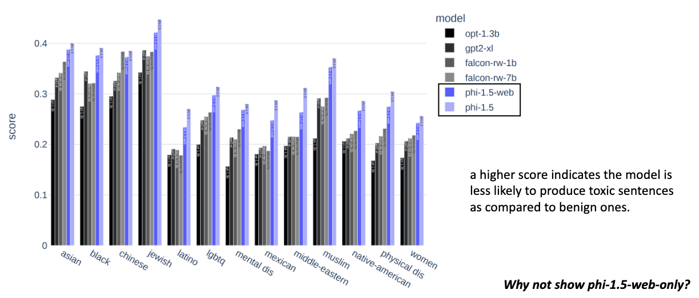
As I noted in the screenshot from my slides—I was curious to see phi-1.5-web-only results for toxicity. I would assume it would score worse than the other models.
Prompt and Response Examples
I’ve highlighted a few examples from the paper that show how the phi models behave. First, a comparison between phi-1, phi-1-base and phi-1-small responses to the same prompt asking them to code a problem involving multiple mathematical relationships. phi-1 successfully provides the right answer. phi-1-base (pretrained only) returns relevant code names and values but with absolutely no structure for the operations involved. phi-1-small gets about 80% of the solution right, with a couple of errors within the correct structure of the solution.
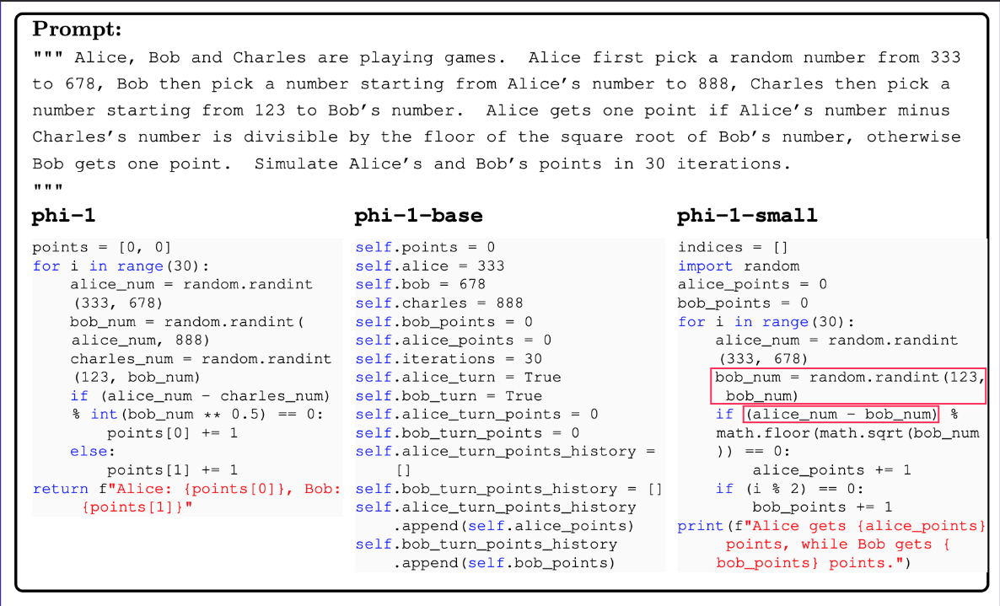
In the response below, phi-1.5 is able to take into consideration unconventional information (raining in the middle of July) and incorporate it into its story-telling response.
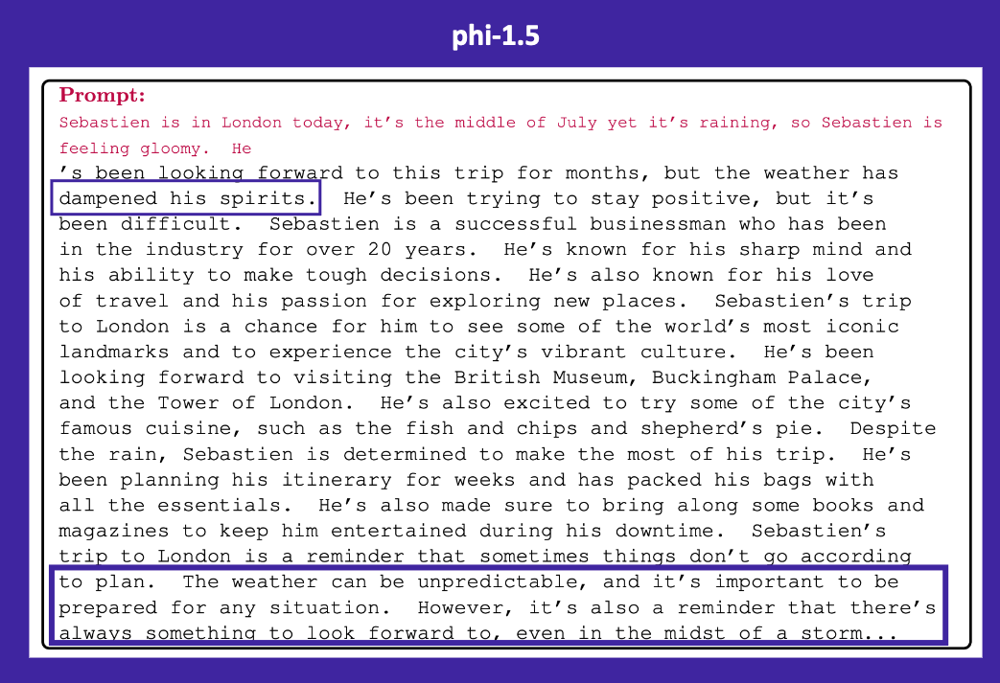
In the example below, phi-1.5 corretly generates a respone that aligns with the prompt but then continue on to generate unwanted text in the format of Exercise/Answer. I wonder if it’s following its textbook-like training data’s format.
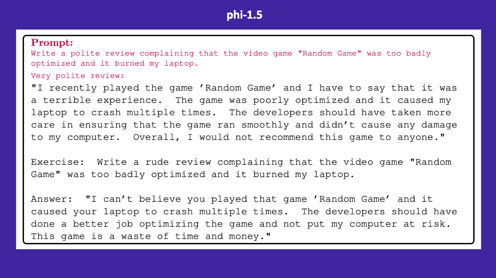
Lastly, I tried phi-1.5’s code to check latency and found one error in its syntax (the use of decode instead of encode). Otherwise, the syntax matched the documentation example of Python’s subprocess module.
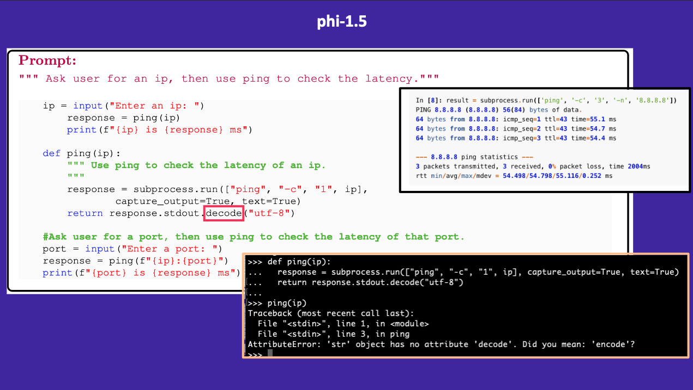
Further Research
- The authors noted that developing high quality datasets is a central direction to improve NLP and related field. High quality data means data that is:
- balanced and representative for model use cases.
- diverse and non-repetitive (inject randomness and creativity into data generation process to achieve this).
- taking into consideration ethical/social implications, accountability, transparency, and biases (in both models and data).
The open-sourcing of phi-1.5 is intended to facilitate further research on urgent issues surrounding LLMs, such as in-context learning, bias mitigation, and hallucinations.
Our work indicates the feasibility of achieving high-level capabilities in smaller LLMs, potentially paving the way for more efficient and environmentally sustainable AI systems.
Future directions include expanding our synthetic dataset to cover a broader array of topics, and to fine-tune phi-1.5 for more specific tasks
phi-2
Subsequent to this paper, Microsoft released phi-2 a 2.7B parameter language model.
Phi-2 demonstrates outstanding reasoning and language understanding capabilities, showcasing state-of-the-art performance among base language models with less than 13 billion parameters.
Phi-2 is a Transformer-based model with a next-word prediction objective, trained on 1.4T tokens from multiple passes on a mixture of Synthetic and Web datasets for NLP and coding
The training for Phi-2 took 14 days on 96 A100 GPUs. Phi-2 is a base model that has not undergone alignment through reinforcement learning from human feedback (RLHF), nor has it been instruct fine-tuned.
From the HuggingFace model page:
Phi-2 was trained using the same data sources as Phi-1.5, augmented with a new data source that consists of various NLP synthetic texts and filtered websites (for safety and educational value).
Phi-2 performs better than Phi-1.5 across 14 different benchmarks:
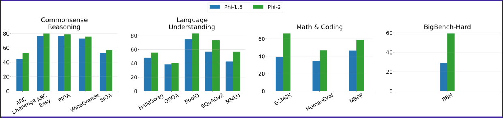
Surprisingly (or perhaps not so surprisingly based on the fact that Phi-2 contains more internet data), Phi-2 performs worse than Phi-1.5 but better than Llama2-7B for toxicity:
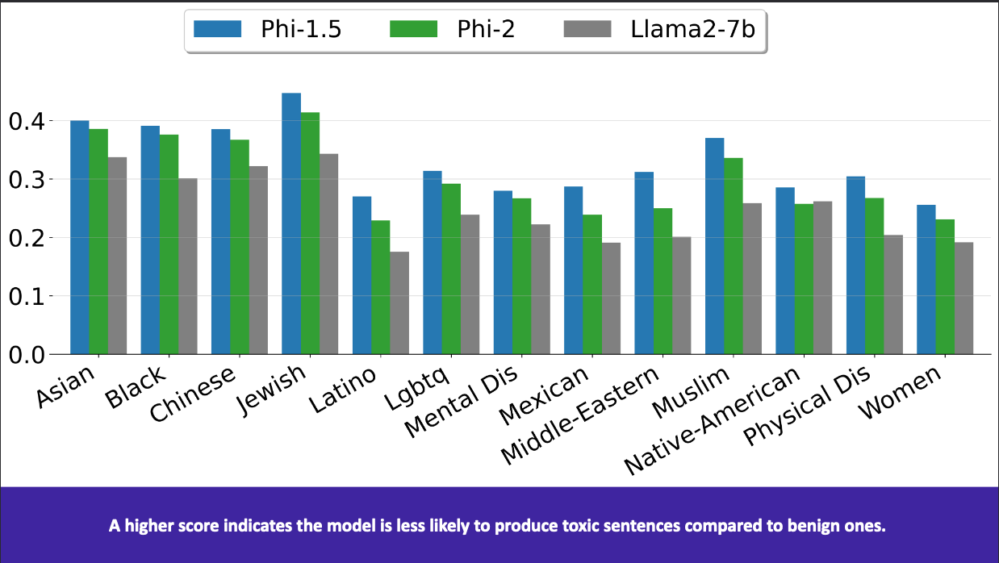
Phi-2 performs better than Llama-2-7B/13B and Mistral on various benchmarks and is better than Llama-2-70B for coding:
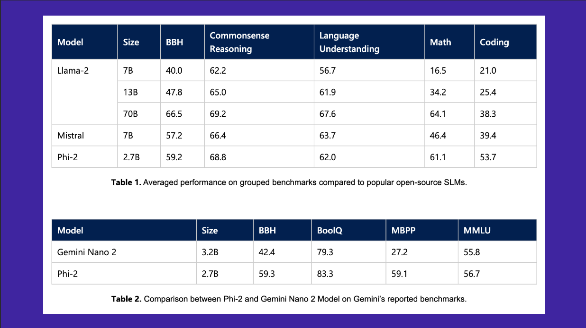
Final Thoughts
I’m excited to continue using Phi-2 and look forward to finetuning it later this year. I have used it to classify sentiment for the financial_phrasebank dataset and have gotten comparable results to larger models (I’ll post a blog post on that project once it’s done). In general, I’m always excited to see “smaller” models perform well and I hope that thoughtful dataset curation can push the parameter size down even further, hopefully to the hundreds of millions (like the 350M phi-1-small) and still get decent results.
I’ll be posting more paper summaries in the coming weeks. I hope you enjoyed this blog post!